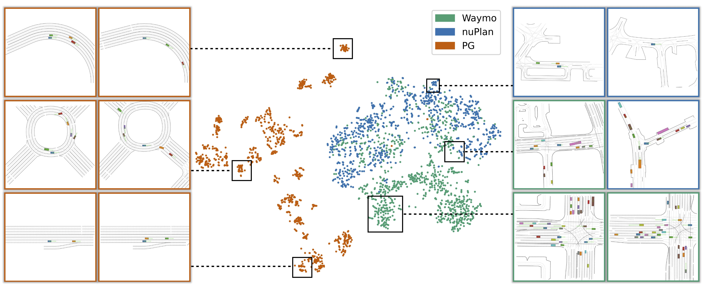

ScenarioNet
Open-source platform for large-scale traffic scenario modeling and simulation
ScenarioNet
Open-source platform for large-scale traffic scenario modeling and simulation
Webpage | Code | Video | Paper | Browse Scenario
Meet ScenarioNet
ScenarioNet is an open-sourced platform for large-scale traffic scenario modeling and simulation.
ScenarioNet's System Design

ScenarioNet consists of the data layer, system layer, and application layer.
Various datasets are unified into an internal scenario description.
The system layer then provides a set of tools to operate on data efficiently, such as filtering, merging, sanity-check,
splitting and so on.
Once the database is ready, it can be loaded into MetaDrive for large-scale simulation and supports applications.
Multi-sensory Simulation
ScenarioNet leverages MetaDrive Simulator for multi-modal observation simulation.
Traffic Scenarios from Various Datasets
ScenarioNet reads from real world dataset such as Waymo, nuScenes, Lyft L5, and nuPlan datasets and creates
interactive environment for closed-loop simulation.
tSNE Visualization of Scenario Embeddings
AD Stack Testing
ScenarioNet bridges OpenPilot (Left) and ROS (Right) for autonomous driving testing.
Acknowledgement
This work was supported by the National Science Foundation under Grant No. 2235012 and the Samsung Global Collaboration Award.
Reference
@article{li2023scenarionet,
title={ScenarioNet: Open-Source Platform for Large-Scale Traffic Scenario Simulation and Modeling},
author={Li, Quanyi and Peng, Zhenghao and Feng, Lan and Liu, Zhizheng and Duan, Chenda and Mo, Wenjie and Zhou, Bolei},
journal={Advances in Neural Information Processing Systems},
year={2023}
}